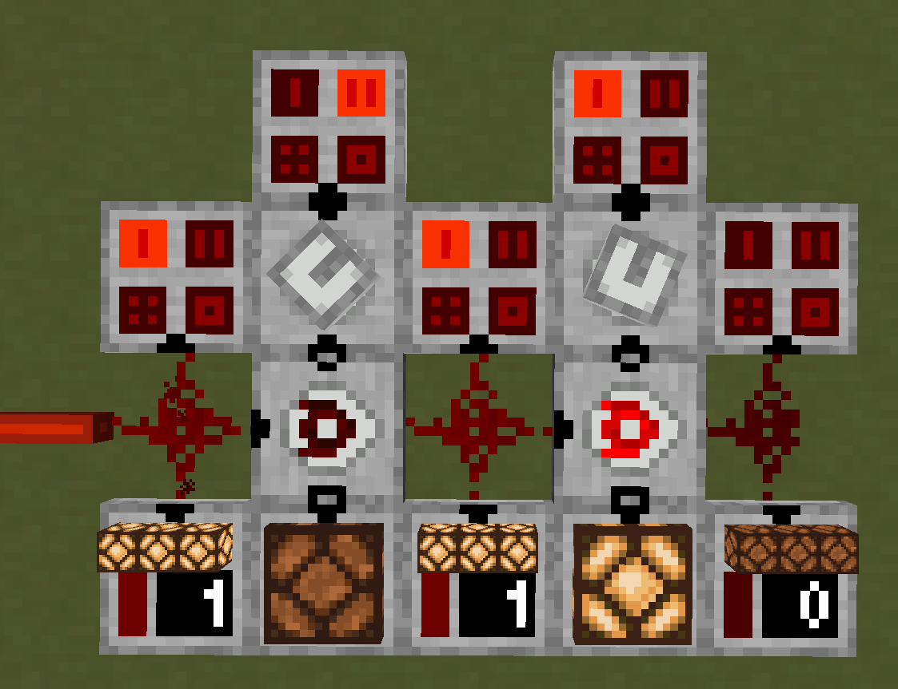

Overview
The Binary Decoder uses the nature of binary values to extract multiple signals from a single Redstone Wire or RedCu Wire.
Redstone operates on signal values from 0 to 15, which in binary corresponds to 4 bits. The Binary Decoder allows the player to read these bits individually, effectively converting a single wire into a 4-channel digital bus.
This bus can be created from discrete signals using the Binary Encoder.
Operation
The Binary Decoder reads:
- Pin Mark A - Bus input signal
- Pin Mark B - Binary filter signal
Both inputs are standard Redstone signals (values from 0 to 15).
First, a binary AND operation is performed between Pin Mark A and Pin Mark B.
Binary AND essentially passes each A and B bit pair through an AND Gate. For example:
A = 0110 ( 6)
B = 1010 (10)
O = 0010 ( 2)
If the result is not 0, Pin Mark C outputs a Redstone signal of 15.
The mark lights up when the output signal at Pin Mark C is greater than 0.
After this, the matching bits are consumed from the bus signal.
“Consumed” means that any bit which is 1 in both A and B becomes 0 in the output. Bits where B is 0 remain unchanged.
This follows the logic:
| A | B | Output |
|---|---|---|
| 0 | 0 | 0 |
| 1 | 0 | 1 |
| 0 | 1 | 0 |
| 1 | 1 | 0 |
Applying this to the same example:
A = 0110 ( 6)
B = 1010 (10)
O = 0100 ( 4)
This resulting value becomes the new bus output.
Example

Consider decoding two independent signals. Refer to the Binary Encoder example for how the signals were combined.
Each channel corresponds to a binary value:
- 1 (0001)
- 2 (0010)
- 4 (0100)
- 8 (1000)
These values act as binary filters used to decode signals. A Hexadecimal Indicator is useful for seeing active channels.
In this example:
- Right channel uses filter 1
- Left channel uses filter 2
The left decoder receives a 1 on Pin Mark A and 2 Pin Mark B, so:
A = 0001 (1)
B = 0010 (2)
O = 0000 (0)
Since the result is 0, Pin Mark C outputs 0.
The bus signal is not consumed and continues to the next decoder.
The right decoder receives a 1 on Pin Mark A and 1 Pin Mark B, so:
A = 0001 (1)
B = 0001 (1)
O = 0001 (1)
Since the result is not 0, Pin Mark C outputs 15.
The bus signal is then consumed:
A = 0001 (1)
B = 0001 (1)
O = 0000 (0)
The remaining bus signal becomes 0.
A useful trick is to detect multiple channels at once by combining filters. For example, to detect channels 4 and 2, set the binary filter to:
4 (0100) + 2 (0010) = 6 (0110)
If the decoder receives a 5 on Pin Mark A:
A = 0101 (5)
B = 0110 (6)
O = 0100 (4)
Then Pin Mark C outputs 15, and the remaining bus becomes:
A = 0101 (5)
B = 0110 (6)
O = 0001 (1)
Leaving channel 1 active.
Configuration
The pins can be configured to face any side by right-clicking the block.
| Pin Mark A | Bus Input |
| Pin Mark B | Binary Filter |
| Pin Mark C | Channel Output |
Crafting
| Ingredients | RedCu Crafter Recipe |
| 1 Buffer Gate | |
| 1 One Way Through Gate | |
| 1 AND Gate |
Version Log
| Version | Description |
| 0.3.1 | Introduced. |